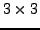

Gan_Matrix34 m34C;
/* ... set up m34A, m34B using e.g. gan_mat34_fill_q() ... */
gan_mat34_add_q ( &m34A, &m34B, &m34C ); /* macro */
or the function
m34C = gan_mat34_add_s ( &m34A, &m34B ); /* function call */
See the discussion of ``quick'' and ``slow'' versions of the same operation,
identified by the ..._q and ..._s suffices,
in Section 1.1. In this case, the ``slow'' version
gan_mat34_add_s() has the overhead of a function call relative
to the ``quick'' version gan_mat34_add_q(), so the latter should
be used unless the input matrices are not simple variables (i.e. they might
be elements of arrays), in which case the repeated evaluation required
by the macro version might be slower.
There are also in-place versions of the add operation, which overwrite one of the input matrices with the result. The macro operations
gan_mat34_add_i1 ( &m34A, &m34B ); /* result in-place in m34A */
and
gan_mat34_add_i2 ( &m34A, &m34B ); /* result in-place in m34B */
produce the same result but overwrite respectively the first m34A
and the second m34B argument with the result. There is also a
more explicit macro
gan_mat34_increment ( &m34A, &m34B ); /* result in-place in m34A */
which increments m34A by m34B, i.e. identical to
gan_mat34_add_i1(). Note that if one of the input arguments is
a non-trivial expression, and the result is being overwritten on the other,
use the function gan_mat34_add_s(), as in
Gan_Matrix34 am34A[100];
/* ... fill am34A array ... */
m34A = gan_mat34_add_s ( &m34A, &am34A[33] );
For general, symmetric and lower triangular  matrices the
addition routines follow those for  matrices. So for general
matrices we have the options
matrices. So for general
matrices we have the options
Gan_Matrix33 m33A, m33B, m33C;
/* ... set up m33A, m33B using e.g. gan_mat33_fill_q() ... */
gan_mat33_add_q ( &m33A, &m33B, &m33C ); /* macro, OR */
m33C = gan_mat33_add_s ( &m33A, &m33B ); /* function call */
gan_mat33_add_i1 ( &m33A, &m33B ); /* macro, result in-place in m33A */
gan_mat33_add_i2 ( &m33A, &m33B ); /* macro, result in-place in m33B */
gan_mat33_increment ( &m33A, &m33B ); /* equivalent to gan_mat33_add_i1() */
For symmetric matrices we have
Gan_SquMatrix33 sm33Sa, sm33Sb, sm33Sc;
/* ... set up sm33Sa, sm33Sb using e.g. gan_symmat33_fill_q() ... */
gan_symmat33_add_q ( &sm33Sa, &sm33Sb, &sm33Sc ); /* macro, OR */
sm33Sc = gan_symmat33_add_s ( &sm33Sa, &sm33Sb ); /* function call */
gan_symmat33_add_i1 ( &sm33Sa, &sm33Sb ); /* macro, result in-place in sm33Sa */
gan_symmat33_add_i2 ( &sm33Sa, &sm33Sb ); /* macro, result in-place in sm33Sb */
gan_symmat33_increment ( &sm33Sa, &sm33Sb ); /* equivalent to gan_symmat33_add_i1() */
Finally for lower triangular matrices we have
Gan_SquMatrix33 sm33La, sm33Lb, sm33Lc;
/* ... set up sm33La, sm33Lb using e.g. gan_ltmat33_fill_q() ... */
gan_ltmat33_add_q ( &sm33La, &sm33Lb, &sm33Lc ); /* macro, OR */
sm33Lc = gan_ltmat33_add_s ( &sm33La, &sm33Lb ); /* function call */
gan_ltmat33_add_i1 ( &sm33La, &sm33Lb ); /* macro, result in-place in sm33La */
gan_ltmat33_add_i2 ( &sm33La, &sm33Lb ); /* macro, result in-place in sm33Lb */
gan_ltmat33_increment ( &sm33La, &sm33Lb ); /* equivalent to gan_ltmat33_add_i1() */
For general square matrices there are routines to implement the operation
Gan_Matrix33 m33A;
Gan_SquMatrix33 sm33S;
/* set up m33A using e.g. gan_mat33_fill_q() */
gan_mat33_saddT_q ( &m33A, &sm33S ); /* S = A+A^T, macro */
sm33S = gan_mat33_saddT_s ( &m33A ); /* S = A+A^T, function call */